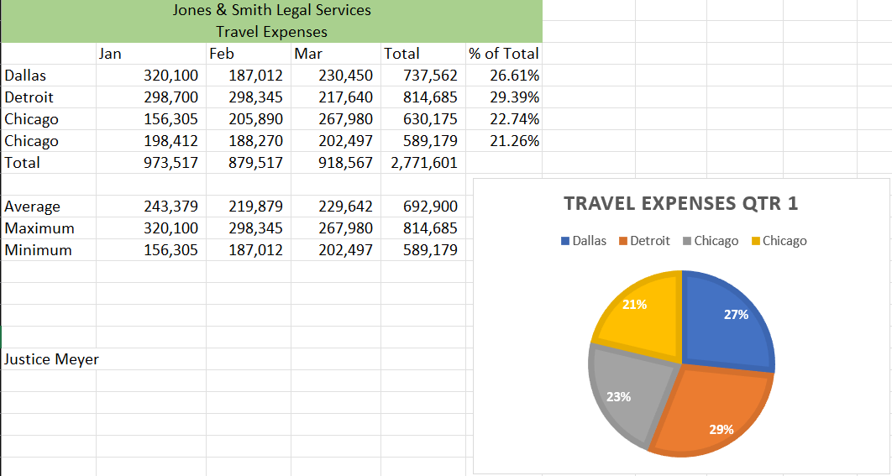
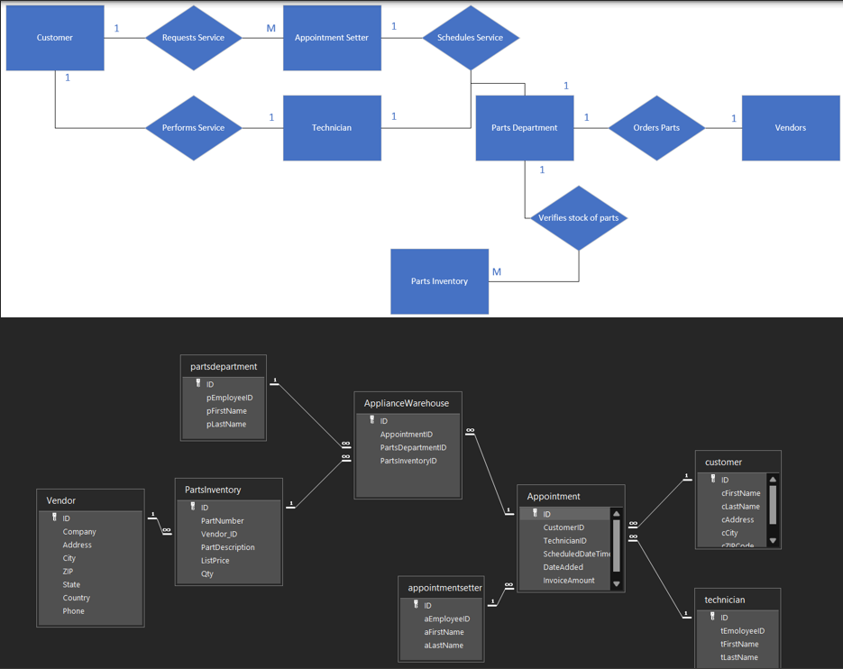
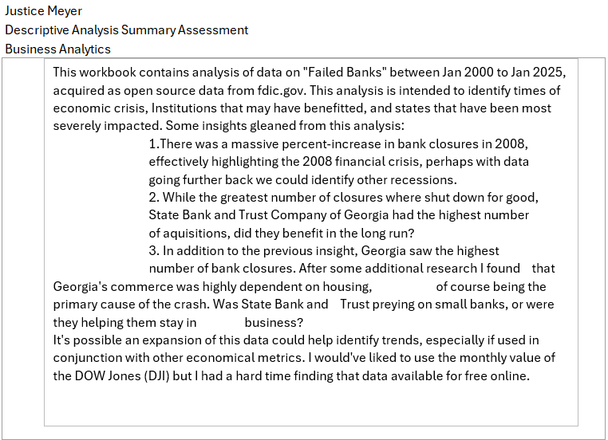
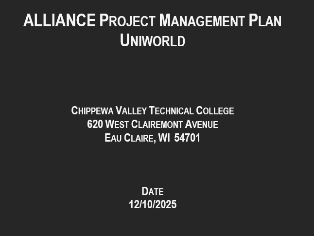

"Success usually comes to those who are too busy to be looking for it."
— Henry David Thoreau
This course taught us Microsoft Office Excel skills and how it is used in academic and business environments. We applied software features to the successful completion of business-related projects and scenarios.

Some key takeaways I took from this course include:Systems Analysis and Design is a broad term for describing methodologies for developing high quality Information Systems which combine Information Technology, people, and data to support business requirements. This course focused heavily on the system development life cycle.

Some key takeaways I took form this course include:This course taught us how to utilize common business software to analyze datasets present in typical business management situations, translate the analysis into business recommendations that will improve business performance, and effectively create and presente analysis recommendations to decision-makers.

Some key takeaways I took from this course include:This course taught us to apply the skills and tools necessary to design, implement, and evaluate formal projects. We demonstrated the application of the role of project management by developing a project proposal, using relevant software, working with project teams, sequencing tasks, charting progress, dealing with variations, budgets and resources, implementing a project, and assessing the outcome.

Some key takeaways I took from this course include: